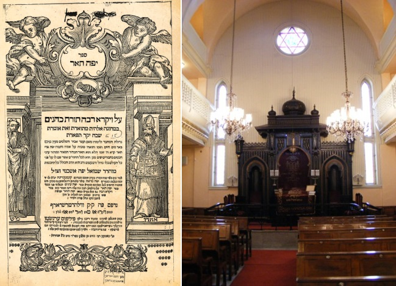

לקראת סיום החודש אשר נהפך ל”דידן נצח” מראשו ועד סופו, הן בימים ההם והן בזמן הזה
לקראת סיום החודש אשר נהפך ל”דידן נצח” מראשו ועד סופו, הן בימים ההם והן בזמן הזה ובשנה זו - נקודת מבט חדשה על המאבק והניצחון, מאת פרשננו לענייני ניצחון בקושטא
לקראת סיום החודש אשר נהפך ל”דידן נצח” מראשו ועד סופו, הן בימים ההם והן בזמן הזה ובשנה זו - נקודת מבט חדשה על המאבק והניצחון, מאת פרשננו לענייני ניצחון בקושטא

500 שנה ועד היום, להיות רב קהילה אשכנזית בבירת טורקיה איננו א גרויסער גליק. אף שמבחינה רוחנית, נהנתה העיר לאחר הכיבוש העותמאני–טורקי מתור זהב רוחני, אבל בני עדתנו (דהיינו שהתנהגו במורשת ישיבות צרפת ואשכנז, מיסודם של בעלי התוספות ותלמידי תלמידיהם), היו שם במיעוט מלחיץ. הקהילות הספרדיות היו הגדולות, העשירות והמבוססות, והקהילות האשכנזיות העמידו תלמידי חכמים בלי כל האמצעים הנ”ל.
כזה היה הרב שמואל יפה אשכנזי (ה’רפה–ה’שנה), תלמיד הרב שלמה אלקבץ (מחבר הפיוט לכה דודי), שהיה רבה של הקהילה האשכנזית בקושטא במאה ה–16 למניינם (שמה של העיר כיום איסטנבול, אך הרבי מייחס כבוד מיוחד לשם שנכתב ע”י גדולי ישראל במשך דורות רבים “קושטא” או במלואו “קושטאנדינא”). הוא היה עסוק בהנהגת הקהילה, פסיקת דינים והרבצת תורה, ובשעות “הפנויות” עסק בכתיבת חיבוריו הענקיים על המדרש: יפה תואר על מדרש רבה; ספר יפה מראה על אגדות הירושלמי, ועוד. הוא היה מראשוני מפרשי הירושלמי והמדרש.
פירושו המקורי על מדרש רבה, מכיל יותר עמודים מאשר מדרש רבה כולו עם כל המפרשים בדפוס ווילנא. בלי הגזמה, כמעט כפליים. אך כאמור, המגזר לא היה דומיננטי באיזור ההוא, ולרב הנכבד לא היה כסף להדפיס את ספריו. בחייו זכה להדפיס רק את הקטן שבחיבוריו - על הירושלמי (כי רבים מאגדותיו כבר פירש בספרו על המדרש שכתב לפניו), וגם זאת - חצי בתרומה וחצי בהלוואה. הוא בעצמו מספר זאת בהקדמה.
ההמשך עבר לאחריות הבנים. בנו לקח את הפעקלאך, נסע לאיטליה, עשה קצת שנור, והצליח להדפיס בוויניציאה את הפירוש האדיר לבראשית רבה. את הפרוייקט הבא ביצע כבר הנכד, שגם הוא חשב להפליג לאירופה ולסגור עניין, אבל שחקה עליו השעה: ספינתו נשבתה ע”י שודדי ים, שלאחר שרוקנו את כל נוסעי הספינה מרכושם הורידו אותם באי רודוס, שם זממו להמיתם בשריפה (היל”ת). הוא ניצל ברגע האחרון, וחזר לקושטא חסר כל, כשרק הכתבים - שגם אותם הצליח להציל בנס - נמצאים עמו. ואז שב על מעשה הסב: הדפיס את החלק הקטן ביותר מתוך מה שנשאר בסדרה, הפירוש על ספר ויקרא. מיד נדבר עליו.
כשהודפס מדרש רבה בווילנא, לא רצו האלמנה והאחים ראם לוותר על פירושו - אך להכניסו במלואו היה מן הנמנע, באם רוצים לשלב בדף גם מפרשים אחרים. הם שכרו קצרן ווילנאי עלום שם שערך עבורם “קיצור” מהספר, יותר מדוייק - לקט קטעים נבחרים ממנו. זה מה שמופיע בדפוסים הנפוצים. כשמציין רבינו לחיבור המקורי, יכתוב בדרך כלל “יפה תואר (הארוך)”. זה שחובר בקושטא, ולא זה שקוצץ בווילנא.
נשוב למחבר עצמו: הוא היה ממארי אגדה, בקיא בחכמת האמת ופה ושם מגלה טפח מידיעותיו ממנה בספריו. אך ניכרת בחיבוריו מגמה כללית של מאבק בפילוסופיה, שעדיין חלק גדול של עם ישראל טרם נגמל ממנה. כמה מאות שנים לפני כן יצאו מגדרם כמה מגדולי ישראל, וכתבו לנבוכי הדורות הסברים פילוסופיים לאמונה בה’ ותורתו. אך לאחר שהוכנסה העז לדירה, היה קשה להוציא אותה. במקום המטרה המקורית - להסביר את התורה באמצעות כלים של פילוסופיה, נוצרה תופעה הפוכה - הפילוסופיה החלה לשמש אמת–מידה לדברים בהם יש להאמין. מול הדבר הזה יצא היפה–תואר למאבק.
לדוגמא, פירושו על המדרש “כל המאמין בב’ עולמות יקרא לך זרע”, והשאלה ברורה - מדוע דווקא האמונה בשני עולמות היא הקובעת? והתשובה: הפילוסופים מאמינים במציאות ה’, אחדותו ושאינו כח בגוף, אך (אין הדבר מכריח לפי דעתם, ולכן הם) כופרים בהשגחת ה’ ובשכר ועונש, וגם אלו מביניהם המודים בכך (הדבר לא מכריח לדעתם ולכן הם) כופרים בהשארות הנפש ותחיית המתים. ולכן, דווקא מי שמאמין בב’ עולמות - הריהו בהכרח מאמין בכל יסודות האמונה הקודמים!
מעולם
תמהתי על פשרו של החג נושא ההפכים ה’ טבת: מחד הריהו חג הספרים, ומבחינה אסוציאטיבית מה שעולה בראש הוא “חג חסידי אינטלקטואלי”; חג ליודעי ספר. ספרים רבותי, ספרים!
מאידך, כל המאמרים שהרבי הגיה או אמר בקשר ובסמוך ליום זה, כמו גם הפתגם ב”היום יום” בתאריך הנ”ל - מדבר על עבודה של הודאה, אמונה פשוטה וקבלת עול.
גם הסיפור במדרש (רבה, פרשת קדושים, כד) המהווה את המקור להכרזת “דידן נצח” - לא מתיישב עם חג שאמור להיחגג בין מדפים ארוכים בחנויות ספרים. איך, ריבונו של עולם, זה קשור לסיפור של גירוש רוחות רעות ע”י המון משולהב החמוש בקלשונים ומגרפות, דופק ומקשקש בהם ומכריז “דידן נצח”, לטובת רוח טובה שתפסה קודם את המעיין. זה חג של ספרים?
ובשביל זה צריך את הרב ההוא מטורקיה, ופירושו ביפה תואר (ועדיף) “הארוך”! הפואנטה מובנת גם מהפירוש הקצר, אבל עיון במקור מעניק תמונה עשירה בהרבה.
המדרש
הזה יכול בהחלט להתפרש כפשוטו, אומר היפה תואר, הרי חז”ל ידעו להתעסק עם רוחות, וגם הפרטים שבמדרש ניתנים לפירוש כפשוטם. אבל! אפשר לפרש את המדרש הזה גם בתור משל.
הנורות האדומות נדלקות, בדרך כלל להפוך סיפור - למשל, הוא טריק פילוסופי ידוע. אך היפה–תואר מגביה מייד את הקערה כשפיה למעלה:
המעיין - הוא סימן לחכמה. רוח טובה - סימן לחכמת התורה. הגעת אנשים ונשים לשאוב מהמעיין בבטחה, לצד נוכחות הרוח הטובה ביום ובלילה - מרמזת לכך שחכמת התורה מועילה לכל אחד, לחכמים כמו לפשוטי העם, ואפילו עניינים עמוקים הנמשלים ל”לילה” - “אין בהם שטן ופגע רע”, כי אינם יכולים להזיק ללומד אותם.
וחילופיהן ברוח הרעה - הרומזת על חכמת הפילוסופיה!!! העוסק בה “יפול בשחת האבדון”, שבו “נוקשו ונלכדו הפילוסופים בעניין חידוש העולם והידיעה האלוקית והשגחתו והשארות הנפש וכיוצא”. לעומת חכמת התורה שלא יכולה להזיק אפילו לאנשים פשוטים - חכמת הפילוסופיה מזיקה גם לחכמים. ולכן, “שאל עצה מה לעשות בו להרחיק המעיינים מפיתויי הרוח הזה”.
ועם החוכמולוגיה הזאת צריך להלחם במינה ודוגמתה: הרוח הטובה מבקשת אפוא לכנס את כל החכמים בתורה “להכות על קודקוד החכמה הפילוסופית”, כאשר כלי הברזל רומזים ל”טענות בהם יכו קודקוד המנגד” ומראים את אמיתות התורה לעומת שקר “העיון ההוא” - “עד שיעשו רושם בכח הטענות האלה להמית הרוח ההיא… וטיפת הדם רמז לרושם הניצוח שתנצח חכמת התורה את החכמה הנכרית”. עד כאן תוכן הדברים. (הספר במלואו ניתן לקריאה והורדה במאגר “היברו בוקס”).
שימו לב לרטוריקה: לא רק הרעיון הכללי, אפילו המונחים דומים להפליא למושגי ה”דידן נצח” החסידי - “המנגד”, “העיון ההוא”, ועוד. אילו לא היינו מגלים קודם, ומשנים מעט את הלשון - הייתם יכולים לחשוב שכל העניין הוא ציטוט משיחה של הרבי העוסקת בחידושו של אדמו”ר הזקן, שהלביש ענייני אלוקות - בשכל, בצורה כזאת שהאלוקות נשארת בטהרתה, ועם כל זה משפיעה בגדרי השכל ובהבנה מוחשית.
וזה
דידן נצח! הנצחון של הספרים, הוא לא ספרים במובן הספרותי רחב האופק וחסר הגבולות. זה לא “דידן דהפרוזה נצח”. אלה ספרים דמויי ברזלים, מוטות אמונה המכים על “קודקוד המנגד” המסתתר בחלל השמאלי ומשם עולה למוח. זהו נצחון ספרי האמונה - כמו הספר “דרך אמונה” אותו הורה הרבי להדפיס מיד אחרי החזרת הספרים בב’ כסלו תשמ”ח. זה נצחון של סידור הבעל–שם–טוב, המאגד ומשלב סידור - עם “פדיונות נפש” שחסידים כותבים על גביו לרבי שבדורם.
זה נצחון של כל מה שהינו חסידי, אמונתי, התקשרותי, אלוקי - על כל מה שהוא רק שכלתני, חקרני, ספקני, “יש ודבר נפרד” הדוחה כל קבלת עול. זה נצחון של שולחן–ערוך, ששיא העומק שלו הוא איך נוטלים ידיים יותר בהידור ואיך מנערים מעיל מהגשם בשבת סוערת; זה נצחון של ספר תהלים, שמעלתו באמירתו בחמימות, מעומק לב ונפש ולא מתוך עיון ב”רובדים הלשוניים של מזמוריו”…
וזה גם הנצחון של כל הספרים והשיחות שנאמרו ויצאו לאור מאז ה’ טבת תשמ”ז וב’ כסלו תשמ”ח - בהם חב”ד הישנה והטובה, נדרשת להיות מצויינת בהתמסרות לעבודה מיוחדת, שכרוכה יותר מאי פעם באמונה שלמעלה מהשכל. לימוד - של ענייני גאולה. השפעה באופן המתקבל - יחד עם רעש והכרזה כמו דידן נצח. חכמה בינה ודעת - ו”קער א וועלט היינט”. הכל כמובן לפי הספר - אבל כזה שכולל כבר לקסיקון חדש של “להכריז ולפרסם.. נביא דורנו”, “לפקוח את העיניים”, “נשיא דורנו משיח צדקנו”, ועוד ועוד. כל הציטוטים כתובים ומפורשים - ורק צריך לקרוא אותם בטון בהם נאמרים פסוקי “אתה הראת” לפני הקפות.
ואם
הרוח הרעה עדיין מבלבלת במוח, אפשר לקחת א גלעזל “ראקי” - ה’משקה המשמח’ הטורקי (יש עם הכשר?), וקצת קפה טורקי, כדי להיות גם מספיק בעננים כדי שהאמונה תאיר וגם מספיק עירניים כדי לומר בקול את מה שצריך לומר. ובלי לשים לב, נמצאים פתאום בעיצומה של התוועדות, שכמוה לא הייתה מימי טרוק–הטורקים. הרוח הטובה מנסה להשליט סדר במצב היוצא משליטה, אך עד מהרה היא נוכחת שהפעם זה “דידן נצח” סופי, שאחריו לא יהיו כבר שום רוחות אחרות.
אז איך אומרים בטורקית: דידן נצח - Zaferimiz!